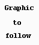

|
|
PCBAmiga, pad functions. By Lee Davison. |
|
Placing a new pad is easy. Just select Operation, New pad from the menus or use the hotkey [F4]. If you use the menu then the program will wait for a mouse click before positioning the pad.Pad layer.At this point, though the pad is positioned, it is not fixed. Clicking the mouse at another position will move the pad to that location. While in this mode you may also change other attributes about the pad.
Pads normally appear on all layers and are shown in the all layer colour. However you can chose a particular layer by selecting a layer from the Pad, layer menu or by using the hotkey [l] and chosing a layer.Pad variant.
To change the type of pad you can either select a type from the Pad, variant menu or by useing the hotkey [v] and then chosing a variant.Pad size.
 The menu allows you to select one of these funky pad shapes.
There are 16 different sizes of pad you can chose from and for each of these sizes you can assign both the inside and outside diameters. Pad size can be chosen from the Pad, size menu or by using the hotkey [s].Fixing the pad.
When you are happy with the pad size, shape and layer you can fix the pad by either clicking the right mouse button or pressing the [ESC] key.
| Last page update: 13th August, 2003. |
e-mail me
 |